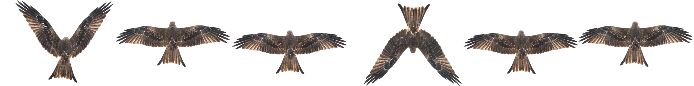

🏛 印西市文化財ずかん
印西市の文化財50か所には「精霊」がかくれています。80m以内まで近づくと出現！ タップしてゲットしよう。レア度は ★市指定 ★★県指定 ★★★国指定。
あとから「🔀 モード切替」（左上メニュー）でいつでも変更できます
| PLAYER | TIME | CHECKPOINT |
|---|
印西市の文化財50か所には「精霊」がかくれています。80m以内まで近づくと出現！ タップしてゲットしよう。レア度は ★市指定 ★★県指定 ★★★国指定。
ここは、印西市の街並みをGoogleの3D都市データでリアルに再現したバーチャル空間です。空を飛んだり、地上を歩いたりしながら、本物そっくりの印西の街を自由に探検できます。
パソコン：
コントローラー（プレイステーション等）：つないだら、まずどれかボタンを1回押してください（押すまでブラウザが認識しません）。認識したらスティックから手を離して1秒ほど待つと操作できるようになります。
スマートフォン：
右側のパネル（スマホは「📍スポット」ボタン）から駅やモールへひとっ飛びもできます。
印西市の指定・登録文化財50か所に「精霊」がかくれています。
集めた記録はこの端末のブラウザに保存されるので、途中でやめても続きから遊べます。
※移動した直後は街並みの読み込みに数秒〜数十秒かかることがあります（「🌍読み込み中…」表示が消えるまでお待ちください）。駅前から離れた郊外では映像が粗い場所もありますが、ピース獲得には影響ありません。
印西市の指定文化財50か所をすべて巡り、絵が完成しました！
おめでとうございます！
この画面のスクリーンショットがイベント参加の証明になります。
🏅 お名前（ニックネーム可）を入れると印西文化財マイスター認定証を発行できます
0〜50m、0.5m刻み。防災・平時の理解訓練用です。

Google Photorealistic 3D Tiles から印西市の街並みデータを取得しています。
通信環境により数十秒かかることがあります。